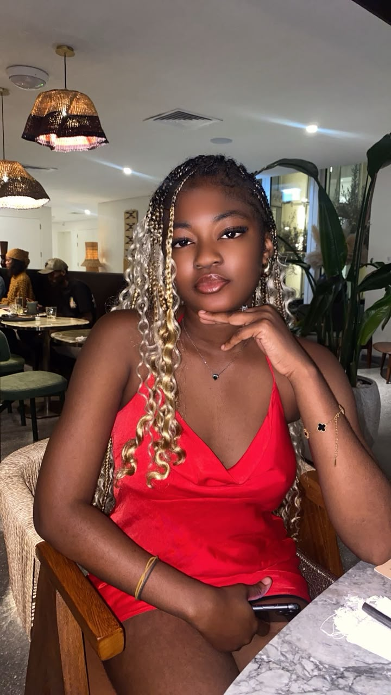

Il est des personnes dont la présence illumine chaque pièce qu'elles traversent. Des femmes dont le rire résonne longtemps après leur départ, dont les mots portent et dont le cœur est d'une générosité infinie. Jennifer Allou est l'une de ces rares merveilles.
Ce magazine n'est pas simplement une célébration d'un anniversaire. C'est un hommage à une vie vécue avec passion, authenticité et élégance. Chaque page est une déclaration d'amour, chaque photo un témoignage, chaque mot une promesse que ton histoire mérite d'être racontée et célébrée.
Aujourd'hui, nous t'offrons ce qui t'appartient de droit : un espace entièrement dédié à toi, à ta beauté, à ta lumière. Bon anniversaire, Jennifer. Le monde est plus beau parce que tu y es.
Il y a dans chaque image de Jennifer une histoire silencieuse. Une façon d'être dans le monde qui lui est propre — élégante, chaleureuse, inimitable. Ces photos ne sont pas de simples instants capturés. Ce sont des fragments d'une âme belle.
Photo principale
Jennifer possède cette rare qualité de rendre chaque moment mémorable. Sa présence transforme les instants ordinaires en souvenirs extraordinaires. Elle rit avec tout son être, aime sans retenue et vit avec une intensité qui force l'admiration.
Derrière le sourire se cachent des profondeurs insoupçonnées. Jennifer est à la fois la force tranquille et la joie explosive, l'écoute attentive et la parole qui libère. C'est cette complexité magnifique qui la rend si inoubliable.